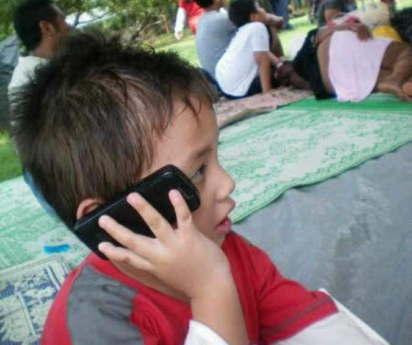
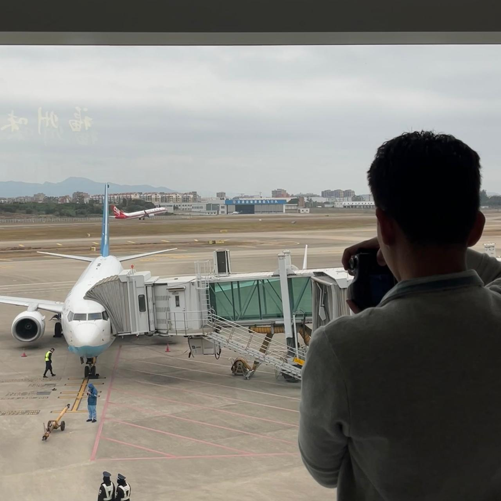
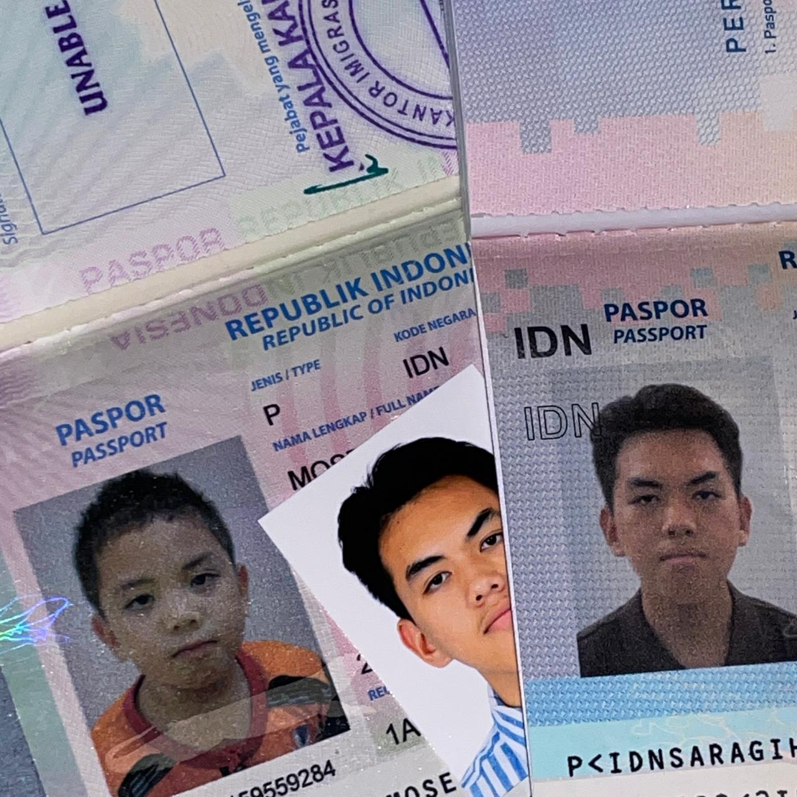
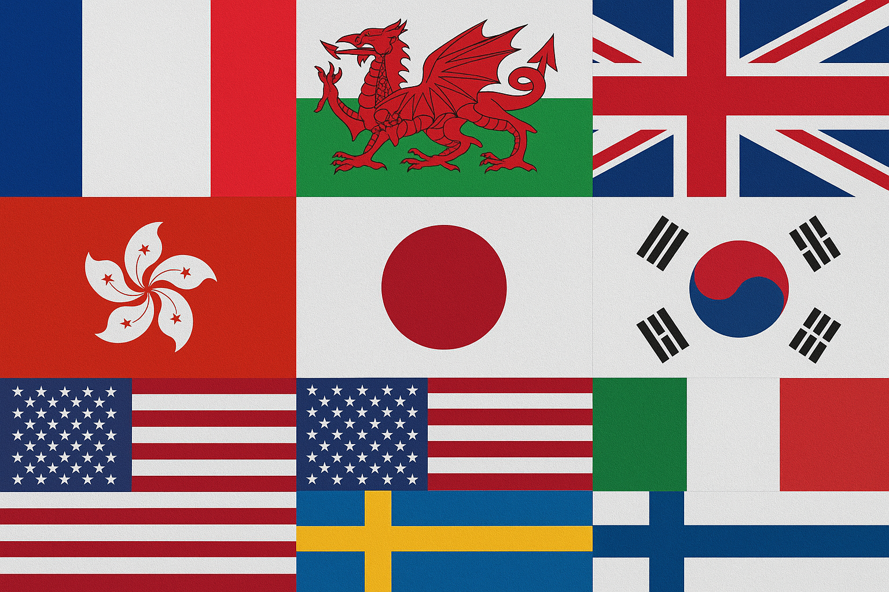
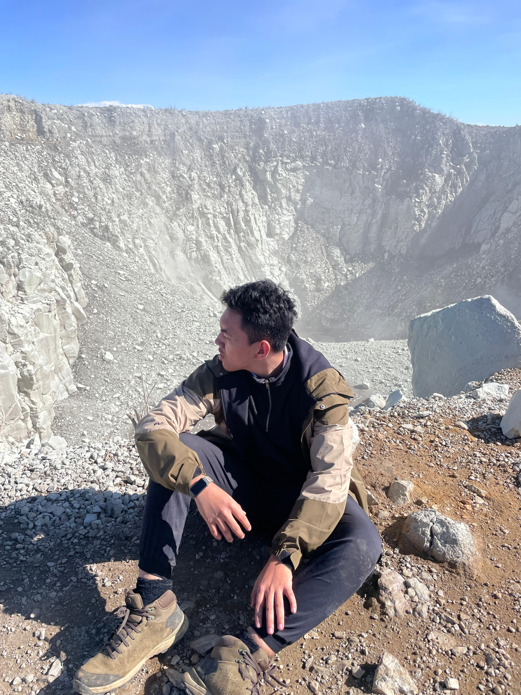

First things first, as you might know from the welcome page, my name is Moses Maro Panarian Saragih, but it’s much cooler to just call me Moses/Ses. Yeah, Saragih is my family name. I was born in Bekasi, Indonesia, on 15 December 2007, CHEERS TO ALL SAGITTARIUS FOLKS! And now, I’m living with my mom in Bekasi. My blood type is O+. My genres are: Rock ; Pop ; Classic ; Jazz as well. Im someone, who known to be extremely hyperactive since childhood, and because of that, I’ve developed an interest in so many things and love doing all of them. Here they are:
My Hobbies

Since I was little, I’ve been interested in Aviation and Architecture, and to this day, I still have a passion for both.
★ Why i like Aviation? How magnificient it is, the most perfect thing that made by mankind in human history ever. Plane is such an incredible innovation, something to be developed even further for our future. It’s just amazing to see everything about it: the structure, the sound, the performance, the efficiency, the technologies, and even the sheer size. All of it is so wonderful to look at.
★ Why Architecture? Same with aviation, I see architecture as something truly special. It’s beautiful to see buildings with innovative designs that not only serve people but also create a better, more futuristic way of living.
Last but not least, my plan for my future is only about study and moving out from my country, UK and USA especially, to get a better opportunity/chance. LETSS GOO UCL/MANCHESTER/CAMBRIDGE/NYU/IVY LEAGUES!!

Travelling has inffluencing my life so much, even till this day. It's not only about visiting the new place, but learning the new culture, the new societies, history, cullinaries and sight seeing how beautiful and wide our world is. The other benefit i got from it is.., im always motivated to work as hard as i could, so at the end i can enjoy all of my hard work by exploring all around the world.

Foreign Languages, is just beautiful and cool to be learnt. Every language has their own differentiation of characteristic, and it's much better if we can communicate with many people around the world by practising their own language. Currently im fluent in english, and still learning French, Japanese, and a little bit of Korean.

Before, i already told you that travelling is one of my hobbies, and its just not perfect when travelling, but not doing the adventures of nature in every places. And.. yeah, Hiking, one of my specialised adventure things, i like the hurts while hiking the mountains or the trails, AND AT THE END, I COULD ADMIRING THE BEAUTIFUL OF THE SURROUNDING VIEW FROM ABOVE A.K.A THE PEAK POINT!!.